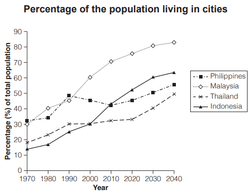

Task 1 — Asian countries urbanisation 1970-2020
The graph below gives information about the percentage of the population in four Asian countries living in cities from 1970 to 2020, with predictions for 2030 and 2040. Summarise the information by selecting and reporting the main features, and make comparisons where relevant.

The graph shows the percentage of the population living in cities in four Asian countries, the Philippines, Malaysia, Thailand and Indonesia, between 1970 and 2020, together with projections for 2030 and 2040.
Overall, urbanisation rose in all four countries throughout the period, and in every case the proportion is expected to continue climbing to 2040. Malaysia remained the most urbanised country throughout, whereas Thailand stayed the least urbanised.
In 1970 the Philippines had the largest urban population (33%), ahead of Malaysia (30%). Malaysia then expanded rapidly, overtaking the Philippines by 1980 and reaching 60% by 2000, and it is forecast to hit 83% by 2040. The Philippines, by contrast, barely grew after 1990, fluctuating between 42% and 46% for three decades before rising to a projected 56%.
Indonesia and Thailand started far lower, at 17% and 13% respectively in 1970. Indonesia's proportion then climbed steadily, overtaking Thailand during the 1980s and the Philippines by 2010, and reaching 53% in 2020; it is predicted to reach 64% by 2040. Thailand's rise was the slowest, reaching only 33% by 2020, although it is expected to rise to 49% by 2040.
TA / TR：完整覆盖四国（菲律宾、马来西亚、泰国、印度尼西亚）1970-2020 真实值与 2030/2040 预测值；Overview 点出马来西亚始终最高、泰国始终最低、四国总体持续上升；Body 以"马来西亚反超菲律宾"和"印尼稳步追赶、先后反超泰菲"两条对比主线组织，所有数字（33% / 30% / 83% / 53% / 64% 等）均来自原图。
CC / LR / GRA：四段式（Introduction → Overview → 高位组 → 低位组），衔接词 whereas / by contrast / then / although 推进对比；LR 使用 overtake / fluctuate / forecast / projected / steadily 等动态图高频词；GRA 简单句与复合句交替，数字加比较结构（ahead of / from … to …）控制密度，句长约 20-28 词。
urbanisation— 城市化percentage of the population— 人口百分比projections / predicted— 预测值 / 预计overtake— 超过fluctuate— 波动steadily— 稳步地remain the most urbanised— 保持最高城市化水平the least urbanised— 城市化程度最低